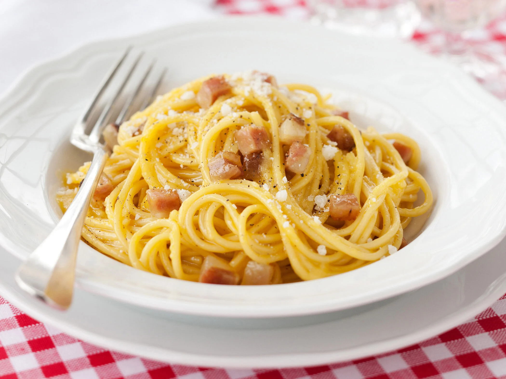

<|
<|
Pasta alla Carbonara

Ingredienti:
- 320g di spaghetti
- 150g di pancetta o guanciale
- 3 uova
- 80g di parmigiano reggiano grattugiato
- Pepe nero q.b.
- Sale q.b.
Istruzioni:
- In una pentola, portare a ebollizione l'acqua salata e cuocere gli spaghetti seguendo le istruzioni sulla confezione.
- In una padella, rosolare la pancetta o il guanciale finché diventa croccante.
- In una ciotola, sbattere le uova con il parmigiano reggiano grattugiato e una generosa spolverata di pepe nero.
- Scolare gli spaghetti al dente e metterli nella padella con la pancetta (tenendo da parte un po' di acqua di cottura della pasta).
- Togliere la padella dal fuoco e aggiungere velocemente la miscela di uova e formaggio, mescolando energicamente per evitare che le uova si rapprendano troppo.
- Se necessario, aggiungere un po' di acqua di cottura della pasta per ottenere una consistenza cremosa.
- Impiattare la pasta alla carbonara e servire immediatamente con una spolverata finale di pepe nero.